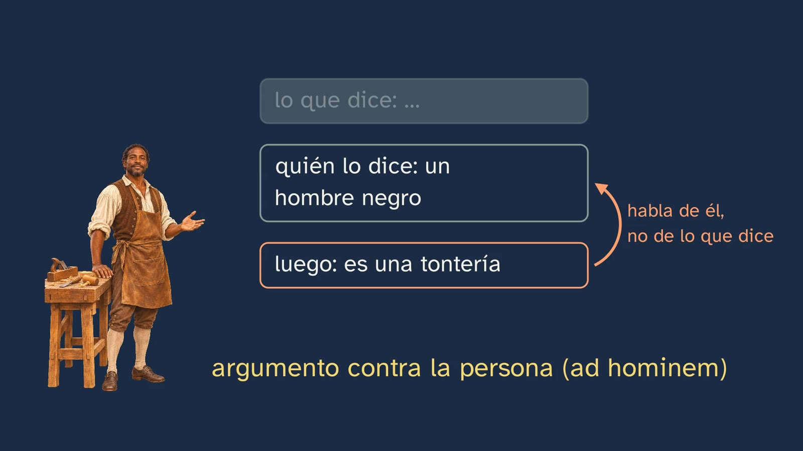
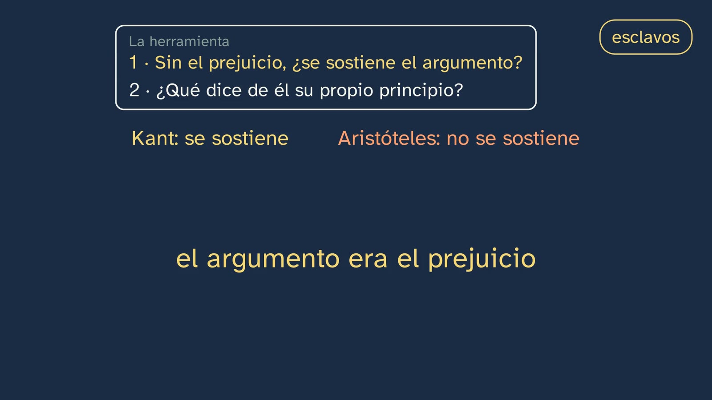
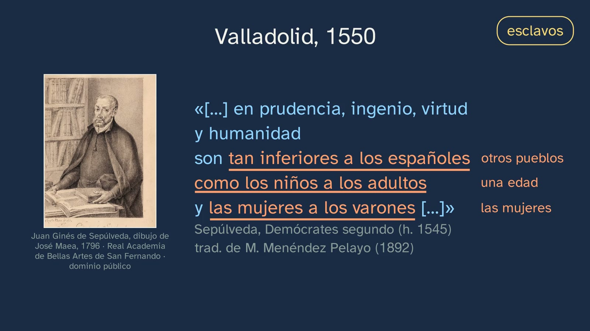
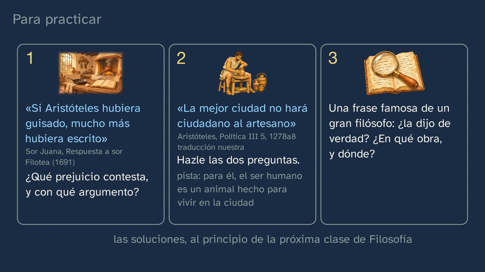

Grandes filósofos, grandes prejuicios
En pocas palabras
La clase responde a una pregunta: ¿qué hacemos con un gran filósofo que tuvo grandes prejuicios? Empieza por dos fechas. En 1734, un africano, Anton Wilhelm Amo, defendió en Alemania una tesis de filosofía; treinta años después, Kant escribió que nunca se había encontrado un africano con talento. ¿Los tiramos enteros, o los disculpamos porque era su época? El alumnado lo predice, y la clase contesta en cuatro pasos:
- Primero, el caso y la palabra. La portada real de la tesis de Amo, firmada «africano de Guinea» (1:56). Hume, en una nota de 1753, sospecha que los negros son inferiores por naturaleza y despacha a Francis Williams, un jamaicano culto; Kant, en 1764, lo cita exagerándolo y le da la razón (2:56). Un prejuicio es una «opinión previa y tenaz, por lo general desfavorable, acerca de algo que se conoce mal» (3:57): previa, porque se tiene antes de mirar; tenaz, porque no cambia al mirar. Hume retocó su nota dos veces, y la sospecha se quedó.
- La trampa, con su nombre. Kant cuenta que un carpintero negro dijo algo que quizá merecía pensarse, y lo descarta por su piel (4:25). No discute lo que dijo: mira quién lo dice. Es el argumento contra la persona, ad hominem (4:58). Y la primera salida fácil, «si Kant tenía prejuicios, nada de lo que pensó vale», es la misma trampa (5:16).
- La herramienta: dos preguntas. Sin el prejuicio, ¿se sostiene el argumento? ¿Qué dice de ese prejuicio su propio principio? (5:39). Con Kant, su ética se sostiene sin el prejuicio, y su fórmula de la humanidad, «cualquier otro», lo condena (6:18). Con Aristóteles y los esclavos, no: el argumento era el prejuicio (8:17). Y la segunda salida, «era su época», tampoco vale: en cada caso hubo quien, en su tiempo, pensaba distinto (6:44).
- Las cuatro casillas del decreto. Etnia: Kant y Hume, frente a Amo y Beattie. Social: Aristóteles y los esclavos, frente a los que él mismo cita; y Valladolid, en 1550, con Sepúlveda y Las Casas. Género: Rousseau, frente a su propio principio de la libertad, a Wollstonecraft y a Poullain. Edad: la Retórica de Aristóteles y Calicles, frente a Epicuro y a la pregunta de un niño de seis años. La pregunta abierta da la vuelta a todo: ¿qué prejuicio nuestro verán claro dentro de doscientos años?
Objetivo. Al terminar, el alumnado sabrá reconocer ejemplos documentados de discriminación social, de género, de etnia y de edad en autores clásicos, las voces que ya en su tiempo los contradijeron, y separar el prejuicio de su época del argumento que merece discutirse.
Las dos preguntas son una regla práctica del canal, no la tesis de ningún autor. No absuelven ni condenan a nadie: examinan argumentos. Por eso la clase da los dos resultados, «a veces sí, a veces no» (13:53), y termina con la herramienta vuelta hacia nosotros.
Las palabras.
- Prejuicio. La acepción 2 del Diccionario de la lengua española (RAE y ASALE, 24.ª ed.), literal en pantalla (3:57). Viene del latín praeiudicium, «juicio previo». Dice «por lo general desfavorable»: también hay prejuicios favorables, y uno sale en la clase, el de que un gran filósofo tendrá razón (1:44).
- Argumento contra la persona, o ad hominem. Juzgar lo que se dice por quién lo dice (4:58). Quién habla sí importa para fiarse de un testimonio, por ejemplo si es parte interesada; no importa para saber si un argumento vale (error 5).
- Principio. La regla general que defiende el propio autor: en Kant, la fórmula de la humanidad; en Rousseau, la libertad. La pregunta dos lo pone frente a su prejuicio.
- Las cuatro casillas. Las del decreto: la discriminación «social, de género, etnia y edad». La pizarra las rotula con las palabras de la voz: «otros pueblos», «esclavos», «mujeres» y «edad». La esclavitud es el caso de lo social (7:37), y la frase de Sepúlveda cruza tres casillas a la vez (9:08).
- Etnia y «otros pueblos». La voz y la pizarra dicen «otros pueblos»; la palabra del decreto es «etnia». Las palabras de Hume y de Kant sólo salen dentro de sus citas.
- Esclavo por naturaleza. El término de Aristóteles (Política I 5): el que «entiende la razón, pero no la tiene» (7:37). Él mismo lo distingue del esclavo «por ley», el prisionero de guerra (véase «Para ampliar»).
- Imperativo categórico y fórmula de la humanidad. Los nombra la voz (5:53). El «sólo» importa: Kant no prohíbe servirse de otros, sino tratarlos sólo como medio (en alemán, bloß).
- «Indios». La palabra de la época. La voz lo dice así: «los pueblos de América, a los que llamaban indios» (8:34).
Currículo
Real Decreto 243/2022, Filosofía (texto consolidado del BOE). Los dos saberes son del bloque A, «La filosofía y el ser humano», apartado 1, «La reflexión filosófica en torno a la propia filosofía». Los minutos son los del vídeo.
| Elemento | Qué dice el decreto | Dónde se trabaja |
|---|---|---|
| Saber básico (bloque A.1) | «La discriminación social, de género, etnia y edad en la tradición filosófica.» | Toda la clase: etnia (1:56 a 7:14), social (7:37 a 9:53, con Valladolid y su frase de tres prejuicios), género (9:53 a 12:10) y edad (12:10 a 13:53). El ejercicio 1 (género) y el 2 (social) |
| Saber básico (bloque A.1) | «Métodos y herramientas básicos del filósofo: el uso y análisis crítico de fuentes; […] el pensamiento y el diálogo argumentativos […].» | Cada cita con su obra y su lugar en pantalla, y tres documentos reales (la tesis de Amo, el Emilio y el libro de Poullain). La herramienta (5:39). El ejercicio 3 |
| Competencia específica 2 | «Buscar, gestionar, interpretar, producir y transmitir correctamente información relativa a cuestiones filosóficas a partir del empleo contrastado y seguro de fuentes, el uso y análisis riguroso de las mismas […]» | El ejercicio 3, comprobar una cita en su obra. Y dos casos de fuente deformada, para el profesorado: Kant exagera a Hume (2:56) y cuenta a Labat de segunda mano (4:25) |
| Competencia específica 3 | «Usar y valorar adecuadamente argumentos y estructuras argumentales […] y evitar modos dogmáticos, falaces y sesgados de sostener opiniones e hipótesis.» | El ad hominem, con su mecanismo en tres cajas (4:58), y en las dos direcciones (5:16). «Era su época», desmontado con fechas (6:44) |
| Competencia específica 6 | «Comprender las principales ideas y teorías filosóficas de los más importantes pensadores y pensadoras, mediante el examen crítico y dialéctico de las mismas y de los problemas fundamentales a los que estas responden […]» | Kant (5:53), Aristóteles (7:37 y 12:10), Rousseau (9:53) y Epicuro (13:14), cada uno con su texto; Amo, Las Casas, Wollstonecraft y Poullain, con el suyo |
| Criterio 2.1 | «Demostrar un conocimiento práctico de los procedimientos elementales de la investigación filosófica a través de tareas como la identificación de fuentes fiables, la búsqueda eficiente y segura de información y la correcta organización, análisis, interpretación, evaluación, producción y comunicación de esta, tanto digitalmente como por medios más tradicionales.» | El ejercicio 3 y la otra opción de la actividad, detectives de citas |
| Criterio 3.3 | «Reconocer la importancia de la cooperación, el compromiso con la verdad, el respeto a la pluralidad y el rechazo de toda actitud discriminatoria o arbitraria, aplicando dichos principios a la práctica argumentativa y al diálogo con los demás.» | La clase entera, y la actividad: el veredicto, sobre el argumento y no sobre la persona |
| Criterio 6.2 | «Adquirir y demostrar un conocimiento significativo de las ideas y teorías filosóficas de algunos de los más importantes pensadores y pensadoras de la historia, mediante su aplicación y el análisis crítico en el contexto de la práctica individual o colectiva de la indagación filosófica.» | Las dos preguntas, aplicadas a Kant (6:18), a Aristóteles (8:17) y a Rousseau, por el alumnado (10:20). La actividad |
También el criterio 3.2. El ad hominem es su caso de libro: «Detectar y evitar modos dogmáticos, falaces y sesgados de sostener opiniones e hipótesis, explicando la naturaleza o mecanismo de dichos sesgos y falacias». Las tres cajas (4:58) son ese mecanismo, dibujado.
El método del decreto. La introducción de la materia quiere reparar «la marginación y el ocultamiento histórico de la mujer, o los prejuicios culturales de carácter etnocéntrico, racista o antropocéntrico» que «han podido lastrar hasta épocas recientes el desarrollo de la disciplina». La clase no lo hace con una lista de frases escandalosas, sino con una herramienta: cada prejuicio, con su texto y su lugar, y a su lado quien en su tiempo pensaba distinto. El antropocentrismo no es de esta clase.
La profundidad de 1.º. Una primera visión: cuatro casos y una herramienta que se puede repetir sola. Los autores vuelven a lo largo del curso con su obra; aquí interesa el método.
Lo que hay que traer.
- De la clase 1: la filosofía es crítica (es la pregunta de recuperar, 1:34). Y el aviso que allí se dio: en Aristóteles, «libre» se opone a «esclavo», y él defendía la esclavitud. Hoy se cumple.
- De la clase 3: las filósofas de la línea del tiempo. Aquí no se repiten: se suman Wollstonecraft y, en el ejercicio 1, sor Juana.
- De la clase 5: la prueba de todos los datos, en las soluciones (0:31).
- De la ESO: distinguir una opinión de un dato. Es lo único que se da por sabido.
Lo que añaden las comunidades (sólo contraste, según la ficha del tema, leída en sus boletines):
| Comunidad y norma | Qué añade | Dónde lo da la clase |
|---|---|---|
| Andalucía · Orden de 30 de mayo de 2023, BOJA núm. 104, 02/06/2023 | En la discriminación, «Filosofía y condición social», la mujer, «Filosofía y etnocentrismo» y «La Filosofía y la infancia» | La condición social, en los esclavos (7:37) y en el artesano del ejercicio 2; la mujer (9:53); el etnocentrismo (1:56 y 8:34); la infancia (13:30) |
| Galicia · Decreto 157/2022, DOG núm. 183, 26/09/2022 | «Filosofía e eurocentrismo»; «Filosofía e infancia: a infancia como momento propicio para a experiencia filosófica» | Valladolid y Las Casas (8:34 a 9:53); la pregunta del niño de seis años (13:30) |
| Madrid · Decreto 64/2022, BOCM núm. 176, 26/07/2022 | «La filosofía y la infancia: el juego, el asombro y la filosofía. La importancia de aprender a pensar»; «La filosofía como revisión crítica de su propia tradición», sin detallar la discriminación | La revisión crítica es la clase entera; la infancia, en 13:30 y en «Para ampliar» (Matthews y Lipman) |
Lo que el profesorado puede echar en falta, y dónde está.
| Contenido | Lo piden | Dónde está |
|---|---|---|
| Otras tradiciones filosóficas | Galicia («eurocentrismo»); la Comunitat Valenciana («decolonización») | Clase 3: otras tradiciones también filosofaron. Aquí, Amo y Las Casas |
| Las filósofas | El decreto (introducción) y varias comunidades | Clase 3, con la línea del tiempo. Aquí, Wollstonecraft; sor Juana, en el ejercicio 1; Olympe de Gouges y Simone de Beauvoir, en «Para ampliar» |
| La misoginia de Aristóteles | Es lo que traen casi todos los libros | No sale en voz: la clase usa a Aristóteles para los esclavos y la edad. Sus textos, con sus líneas, en «Para ampliar» y en la tarjeta B de la actividad |
| La vejez | Ninguna comunidad ni ningún libro; cabe en la letra del decreto («edad») | Aquí (12:10 a 13:30): un aporte propio. Beauvoir, en «Para ampliar» |
Dónde lo traen los libros. De los proyectos editoriales que contrastamos con su unidad 1 a la vista, sólo dos le dan a este saber un apartado propio; los demás, menciones, recuadros o líneas del tiempo con filósofas. Ninguno lee «edad» como vejez, y sólo dos tratan la infancia. Y ninguno examina con los textos los prejuicios de los grandes autores, más allá de la misoginia de Aristóteles. Lo que añade esta clase: cada texto con su lugar, la edad por sus dos lados y una herramienta que se puede aplicar.
Cómo está construida la clase
Capítulos del vídeo
Dieciséis minutos (16:14), en nueve capítulos. Javier sale a cámara cuatro veces: al saludar (0:00), con el gancho (0:19), a mitad (7:14) y al despedirse (16:04). El hilo es una caja, «La herramienta», con dos renglones (5:39): se queda arriba, pequeña, y cada vez que se usa se enciende el renglón que toca (6:18, 8:17, 9:23 y 10:20), hasta la síntesis (13:53), con «a veces sí» y «a veces no». Las dos salidas fáciles tienen su dibujo, una papelera y un reloj de arena (3:40), y cada una se tacha en naranja cuando cae (5:16 y 6:44). Y las cuatro casillas del decreto (7:21) se llenan con quién tuvo el prejuicio y, debajo, con quién pensaba distinto en su tiempo; al final, a su lado, una quinta casilla vacía, «hoy» (15:36).
| Capítulo | Qué pasa | Por qué así |
|---|---|---|
| Qué vamos a ver (0:00) | Javier saluda; el mapa del tema, con la sexta clase recuadrada (0:04). Gancho a cámara (0:19): en 1734, un africano defiende en Alemania una tesis de filosofía; treinta años después, Kant escribe que nunca se había encontrado un africano con talento. | Una pregunta con su quién, su cuándo y su dónde. Los dos datos, sin adjetivos: el choque lo ve el alumnado. |
| Las soluciones de la clase anterior (0:31) | Las tres de la clase 5, cada una con su enunciado y su dibujo (0:31, 0:55 y 1:18). Recuperar (1:34): ¿qué quería decir que la filosofía es crítica? La respuesta (1:44), con un añadido: «ni porque lo diga un gran filósofo». | Práctica espaciada. El añadido es la tesis de hoy. |
| Un africano en Wittenberg (1:56) | La portada real de la tesis, con «GVINEA-AFER» marcado y traducido (1:56). Una cinta de su vida, cada hito al decirse (2:11). Para y piensa (2:41; la pausa, en 2:51): ¿por qué firmó así? Hume y Kant, con sus retratos, sus fechas en una línea del tiempo y sus frases (2:56). Sobre Hume y Kant, una raya discontinua, «no consta que supieran de Amo», y Francis Williams, con su retrato (3:23). Predice (3:40; la pausa, en 3:52): la papelera, «tirarlos enteros», o el reloj de arena, «disculparlos: era su época». | Antes que el prejuicio, la persona que lo desmiente: la clase empieza por la obra de Amo, no por la frase de Kant. |
| Qué es un prejuicio (3:57) | La definición, tecleada; «previa: antes de mirar» y «tenaz: no cambia al mirar»; «Hume retocó su nota dos veces» y «y la sospecha se quedó». El carpintero ilustrado, con un bocadillo de puntos suspensivos; el libro de un misionero, y Kant, que lo supo de segunda mano; su frase (4:25). Tres cajas: lo que dice, quién lo dice, luego (4:58); la flecha de la tercera a la segunda, y el nombre: ad hominem. | El mecanismo se ve antes de tener nombre. Lo que dijo el carpintero se queda en «…»: aquí no importa (véase «Para ampliar»). |
| Dos preguntas (5:16) | Las mismas tres cajas, con Kant en lugar del carpintero; la papelera se tacha (5:16). La herramienta (5:39). La fórmula de la humanidad, tecleada (5:53). Las dos preguntas, con «cualquier otro» marcado y el carpintero que vuelve: «su principio lo condena» (6:18). El reloj de arena y la línea del tiempo: Amo, 1734; Beattie, 1770, con su retrato y su frase; el reloj se tacha (6:44). Javier, a mitad (7:14). Las cuatro casillas, con las palabras de la voz: otros pueblos, esclavos, mujeres y edad (7:21). | La salida fácil cae con la misma figura que el prejuicio, porque es la misma trampa. La herramienta se estrena donde sale «sí». |
| De Atenas a Valladolid (7:37) | Aristóteles, imaginado por Hayez, y su cita (7:37). Los que, según él mismo, pensaban distinto, con un grupo ilustrado bajo un pórtico (7:56). Pregunta uno (8:17): la frase clave cae y deja su hueco, y queda «el argumento era el prejuicio». «Un prejuicio con un gran nombre detrás es peligroso»; Valladolid, 1550: la pregunta de la junta; Sepúlveda, en el dibujo de Maea, y su frase (8:34); sus tres trozos, cada uno con su casilla (9:08). Las Casas, en la junta, ante el atril, con su retrato (9:23): la pregunta dos; ciudades, leyes y gobierno; su frase; «sentencia: no consta». | La misma herramienta da el resultado contrario. Y Valladolid enseña por qué importa: un prejuicio con un gran nombre detrás sirvió para discutir una guerra. |
| Rousseau y Wollstonecraft (9:53) | 1762: el Emilio, con su página real y la frase marcada (9:53). El mismo año, El contrato social (10:20); una raya une las dos citas; para y piensa, con la pregunta dos (la pausa, en 10:39). La respuesta (10:45): «libre» se marca y la cita de la educación se tacha. Wollstonecraft, en el retrato de Opie, la frase de Rousseau y la suya. Lo que le tocaba, lo que eligió, y una pregunta (11:18; la pausa, en 11:42). Poullain, 1673, con una página real (la edición de 1691) y su nota; su portada, «se défaire des Préjugez» (11:47). | Aquí la pregunta dos la hace el alumnado antes que nadie. Wollstonecraft llega con sus tres piezas: el papel que le tocaba, lo que eligió y una pregunta abierta. |
| ¿Hay una edad para pensar? (12:10) | La chica y el chico, ilustrados; la frase de los jóvenes, sola, con «¿Quién lo dijo?»; su autor; «para el orador»; el hombre mayor y «no afirman nada con seguridad (…) y siempre añaden "quizá"»; el bocadillo «eres joven, así que no tienes razón» (12:10). Calicles (12:47). Sin pistas (13:01; la pausa, en 13:08). Epicuro, con la pareja y el hombre mayor, que laten al nombrarse (13:14). La pregunta de un niño de unos seis años, y Descartes (13:30). | Por los dos lados. La frase de los jóvenes va sin autor, para que el alumnado la juzgue antes de saber de quién es. |
| Y nosotros, ¿qué no vemos? (13:53) | Recapitulemos (13:53): la definición, las cuatro casillas con quién lo tuvo y quién pensaba distinto, y la caja con «a veces sí» y «a veces no». Tres ejercicios (14:50). La pregunta abierta (15:36; la pausa, en 15:48), con la quinta casilla. La clase 7 (15:54). Despedida (16:04): ni tirarlo entero, ni creérselo entero. | Las soluciones abren la clase 7. |



Plan de una sesión de 50 minutos
Pensado para que la actividad llegue cuando el alumnado ya ha visto las cuatro casillas, y antes de la síntesis.
| Minutos | Qué se hace |
|---|---|
| 0–3 | Sin vídeo: «Antes de empezar», en la hoja. Alguien a quien admiras, y un prejuicio sobre tu edad. |
| 3–11 | Vídeo de 0:00 a 5:16 (si las soluciones de la clase 5 ya se corrigieron, se salta de 0:31 a 1:34). Parada en 2:51: ¿por qué firmó así?, en una frase. Parada en 3:52: la predicción, por escrito. |
| 11–14 | Vídeo de 5:16 a 7:37. La fila de Kant en la tabla de la herramienta. |
| 14–17 | Vídeo de 7:37 a 9:54. La fila de Aristóteles, y la frase de Sepúlveda en sus tres casillas. |
| 17–21 | Vídeo de 9:53 a 12:09. Parar en 10:39: un minuto en parejas, la pregunta dos a Rousseau, antes de oír la respuesta. |
| 21–24 | Vídeo de 12:10 a 13:51. Parar en 13:08: ¿qué le contestarías a Calicles?, por escrito. |
| 24–39 | La actividad: las dos preguntas, en grupo (abajo). |
| 39–43 | Vídeo de 13:53 al final (16:14). La pregunta abierta, en voz alta o al diario filosófico. |
| 43–50 | «Al final de la clase», en la hoja. Los ejercicios, para casa. |
Si hay dos sesiones, se corta a mitad, en 7:14, con Javier a cámara: «juzgar lo dicho por quién lo dice no es un argumento». La segunda sesión empieza con las cuatro casillas (7:21) y deja más tiempo para la actividad y para Calicles.
Si hay poco tiempo, el vídeo entero, con sus paradas (unos 22 minutos), y la actividad con una sola tarjeta, en común, en la pizarra (10 minutos).
Si la pregunta abierta prende (15:36), conviene llevarla a cómo se reconoce un prejuicio, no a señalar el de un grupo concreto ni el de nadie de la clase. Y si sale «¿era Kant racista?», véase «Para ampliar»: lo que escribió en 1764 no lo discute nadie; si cambió de opinión después, se discute. El profesor modera y no da su veredicto.
Errores típicos y cómo se tratan
Son confusiones frecuentes que el diseño prevé; no hay, que sepamos, una investigación didáctica tan sólida sobre ellas como la de las ciencias.
- «Si un gran filósofo tuvo prejuicios, nada de lo que dijo vale.» Es la primera salida fácil, y la clase la desmonta con la misma figura que el prejuicio de Kant (5:16): juzga lo que se dice por quién lo dice. Tiene algo de verdad: un prejuicio puede estar en el centro de una teoría, como en Aristóteles y los esclavos (8:17). Pero eso se descubre con la pregunta uno, no se decide antes.
- «Si es un gran filósofo, tendrá razón.» El prejuicio favorable, el que la clase descarta desde la recuperación (1:44): la filosofía no acepta algo porque lo diga un gran filósofo. Es el mismo error que el 1, del otro lado.
- «Era su época.» Explica, pero no disculpa: en cada caso hubo quien, en su tiempo, pensaba distinto (6:44, 7:56 y 11:47). El propio Aristóteles cuenta que sobre la esclavitud «unos piensan así y otros de otro modo, incluso entre los sabios» (Política I 6, 1255a12). Cuidado con el error contrario: los que pensaban distinto no pensaban como hoy en todo. Beattie razona con el marco de su tiempo, el de los pueblos «bárbaros» y «civilizados»; el carpintero de Labat defendía tener sometidas a las mujeres; y la igualdad de Platón tenía una cláusula (tarjeta A de la actividad).
- «Separar el prejuicio del argumento sirve para salvar al autor.» La herramienta no absuelve. Con Aristóteles, al quitar el prejuicio no queda argumento (8:17). Y con Kant, lo que se sostiene es su ética, no su texto de 1764.
- «Todo lo que se dice de una persona es ad hominem.» No. Descartar un argumento por quien lo dice es ad hominem; mirar si un testimonio es fiable es crítica de fuentes, y es lo que pide la competencia 2. El único relato detallado de cómo fue Valladolid lo imprimió Las Casas, que era parte; Edward Long, que identificó a Francis Williams, era él mismo un autor racista. Saberlo no refuta nada, pero obliga a contrastar. Y decir que Kant tenía prejuicios es un dato; se vuelve ad hominem si se usa para no examinar su ética.
- «Kant era racista, así que su ética es racista», o al revés, «Kant cambió de opinión, así que no lo era». Las dos van más allá de lo que se sabe. Lo de 1764 no lo discute nadie; si lo abandonó en los años noventa, se discute entre especialistas (véase «Para ampliar»). Lo que afirma la clase es más estrecho: su principio, «tal como lo escribió», condena su prejuicio (6:18). Es la letra del texto, no la intención de Kant.
- «Aristóteles dice que los jóvenes no saben nada.» Dos confusiones. La Retórica retrata lo que la gente suele pensar de cada edad, para que el orador sepa hablarle, y no describe a cada persona (12:10). Y «creen, pero no saben nada» lo dice de los mayores, como lo contrario de los jóvenes: no afirman nada con seguridad y siempre añaden «quizá» (Retórica II 13, 1389b16–19). Se vuelve prejuicio cuando decide por alguien antes de oírlo.
- «Un prejuicio es cualquier opinión negativa.» La definición pide más: previa, tenaz y sobre algo que se conoce mal. Un juicio negativo hecho después de mirar bien, y que cambia si llegan datos nuevos, no es un prejuicio. Y hay prejuicios favorables (error 2).
- Leer a sor Juana al pie de la letra (ejercicio 1). «¿Qué podemos saber las mujeres, sino filosofías de cocina?» es ironía: se burla del sitio que le asignan; no es modestia.
- «Si está en su libro, lo pensaba él.» Un autor puede citar un verso ajeno, poner unas palabras en boca de un personaje o contar lo que dicen otros. Calicles es un personaje del Gorgias, y Platón lo refuta (12:47); la objeción de 7:56 son «otros», según Aristóteles. Antes de atribuir una idea, hay que ver quién habla en el texto. Es la mitad del ejercicio 3.

Preguntas y soluciones
Dentro del vídeo
- Dijimos que la filosofía es crítica. ¿Qué quería decir eso? (1:34; sin pausa, y la respuesta en 1:44). Que no acepta algo porque lo diga mucha gente, ni porque se haya dicho siempre. La clase añade lo de hoy: ni porque lo diga un gran filósofo. Lo que saldrá: «que critica todo», en el sentido de llevar la contraria. Criticar es examinar las razones, no rechazar.
- Llegó, probablemente, como un regalo. Y, ya filósofo, firmó su tesis así: africano de Guinea. ¿Por qué crees que lo hizo? (2:41; la pausa, en 2:51). Abierta: la clase no da la respuesta, y esta ficha tampoco. Vale cualquier razón con su porqué, si se apoya en lo que se ha visto: el contraste entre llegar como un regalo y firmar como filósofo, con su origen. Ojo: «probablemente como un regalo» es la hipótesis mayoritaria, no un hecho seguro (véase «Para ampliar»).
- Predice: ¿qué hacemos con Kant y con Hume? ¿Los tiramos enteros, con todo lo que pensaron? ¿O los disculpamos, porque era su época? (3:40; la pausa, en 3:52). Vale cualquiera razonada. La clase contesta que ninguna de las dos (5:16 y 6:44). Merece la pena valorar a quien proponga separar. Lo que saldrá: las dos, a partes iguales, y una mezcla, «lo malo se tira y lo bueno se queda». Es casi la herramienta, pero sin decir cómo se distingue lo uno de lo otro: eso es lo que dan las dos preguntas.
- Pregunta uno: sin el prejuicio, ¿se sostiene su ética? Pregunta dos: ¿qué dice su principio de su prejuicio? (6:18; sin pausa). Sí se sostiene: para decir que nadie es sólo una herramienta, no hace falta ningún color de piel. Y su principio dice «cualquier otro»: también el carpintero. Ojo: «tal como lo escribió» es exacto, y conviene no ir más allá (error 6).
- Hazle la pregunta uno a Aristóteles (8:17; la respuesta, en el mismo bloque). No se sostiene: si se quita que hay quien «entiende la razón, pero no la tiene», no queda argumento. Lo que saldrá: «pero en su época…». Es la otra salida, y la clase ya la ha contestado con el bloque anterior (7:56).
- Ahora tú. Hazle la pregunta dos: ¿qué dice su principio de su prejuicio? (10:20; la pausa, en 10:39; conviene pausar). Su principio es la libertad, «el hombre nace libre» (El contrato social I 1), y una educación hecha para agradar a otro no educa para ser libre (10:45). Para una nota alta: el principio está también en el propio Emilio: en el libro II, Rousseau escribe que «el primero de todos los bienes no es la autoridad, sino la libertad», y lo llama su «máxima fundamental» (t. I, pp. 167–168); en el libro V, que las chicas «se sienten hechas para obedecer» y deben aprender pronto a «soportar incluso la injusticia» (t. IV, pp. 48–49). Lo que saldrá: «Rousseau era un hipócrita». Es juzgarlo a él, no a su argumento; la pregunta dos pide decir qué choca con qué.
- ¿Qué hace falta para salirse del papel que te toca? (11:18; la pausa, en 11:42). Abierta. Wollstonecraft da un caso, no una receta: con pocas salidas, hizo los tres trabajos que le tocaban y, cuando el último se acabó, se fue a vivir de escribir. Vuelve en «Para ti», y mejor por escrito: nadie tiene que contar su vida.
- Ahora te toca a ti, sin pistas: ¿qué le contestarías a Calicles? (13:01; la pausa, en 13:08). Abierta. La clase da después a Epicuro (13:14), que no es una refutación, sino otra postura. Buenas respuestas: que «darle unos golpes» no es un argumento, sino fuerza; que es la trampa de hoy, juzgar lo que alguien dice por quién es, aquí por su edad; o la de Epicuro, con otras palabras. Ojo: Calicles es un personaje, y Platón lo pone en boca de un adversario para desmontarlo.
- ¿Qué prejuicio nuestro de hoy verán claro dentro de doscientos años? (15:36; la pausa, en 15:48). Véase abajo, «Para seguir pensando».
De la hoja del alumnado
- Antes de empezar. No hay respuesta correcta: es su punto de partida. Al final interesa comparar lo que harían con la obra de esa persona con las dos preguntas, y su definición con la del diccionario. El prejuicio sobre su edad vuelve en 12:09. Nadie tiene que decir en voz alta a quién admira.
- Tu memoria. Que la filosofía no acepta algo porque lo diga mucha gente, ni porque se haya dicho siempre. Hoy se añade: ni porque lo diga un gran filósofo.
- Amo. Nació hacia 1703 en la costa de lo que hoy es Ghana, y llegó de niño a la corte de un duque alemán, probablemente como un regalo. Estudió en Halle y en Wittenberg, y su tesis de 1734 defiende que quien siente no es la mente, sino el cuerpo vivo. Después dio clase en la universidad. La firmó «africano de Guinea»: en la portada, en latín, «GVINEA-AFER».
- Para y piensa. Véase arriba.
- Hume y Kant. Hume escribió en una nota, en 1753, que sospechaba que los negros eran por naturaleza inferiores a los blancos. Kant, en 1764, lo citó y le dio la razón. «Exagerándolo» quiere decir que le hizo decir más de lo que dijo: según Kant, Hume desafía a cualquiera a dar un solo ejemplo de un negro con talento, y en la nota de Hume no hay ningún desafío.
- Francis Williams. Un jamaicano culto, del que Hume había oído hablar. Lo despachó así: seguramente se le admira por muy poca cosa. Y no consta que Kant ni Hume supieran de Amo.
- Tu predicción. Véase arriba.
- El prejuicio. «Opinión previa y tenaz, por lo general desfavorable, acerca de algo que se conoce mal.» Previa: se tiene antes de mirar. Tenaz: no cambia al mirar. La de Hume es tenaz porque oyó hablar de un jamaicano culto, retocó su nota dos veces, en 1770 y en 1777, y la sospecha se quedó.
- El carpintero. Kant admite que lo que dijo quizá merecía pensarse, y lo descarta porque era negro «de la cabeza a los pies». No discute lo que dijo: mira su piel. No es un argumento, porque la piel de quien habla no dice nada de si tiene razón. Es el argumento contra la persona, ad hominem.
- La misma trampa. «Si Kant tenía prejuicios, nada de lo que pensó vale» también juzga lo que se dice, su filosofía, por quién lo dice, Kant, que tenía prejuicios. Son las mismas tres cajas, con otras letras.
- La tabla de la herramienta. Kant: uno, se sostiene (nadie es sólo una herramienta, y eso no necesita ningún color de piel); dos, su principio dice «cualquier otro», también el carpintero, y condena su prejuicio. Aristóteles y los esclavos: uno, no se sostiene, porque el argumento era el prejuicio; la dos no la hace la clase con él, sino Las Casas, contra el uso que hacía Sepúlveda (9:23). Rousseau: dos, su principio, la libertad, choca con una educación pensada para agradar; la uno no la hace la clase. Para una nota alta, quien la intente: sin el prejuicio de que las mujeres están hechas para los hombres, no queda plan de educación para Sofía, porque todo él está pensado «en función de los hombres».
- «Era su época». Amo defendió su tesis en 1734, treinta años antes que Kant, y en 1770 James Beattie le contestó a Hume por escrito. Que un prejuicio fuera común no quiere decir que no se pudiera ver.
- Aristóteles. Esclavo por naturaleza es «el que entiende la razón, pero no la tiene»; y para ellos, dice, ser esclavos es conveniente y justo. Él mismo cuenta que otros, en su tiempo, decían que tener esclavos va contra la naturaleza: que es la ley la que hace a uno esclavo y a otro libre, pero que por naturaleza no se diferencian en nada, y que por eso no es justo, porque es a la fuerza.
- Valladolid. Se discutía si era justo hacer la guerra a los pueblos de América. Sepúlveda, apoyado en Aristóteles, escribió que eran tan inferiores a los españoles como los niños a los adultos y las mujeres a los varones: un prejuicio de etnia, uno de edad, porque usa a los niños como medida de lo que vale menos, y uno de género. Las Casas le contestó con el mismo Aristóteles: los indios tienen ciudades, leyes y gobierno. Y lo resumió así: todas las naciones del mundo son hombres. No consta que los jueces dieran una sentencia, y el libro de Sepúlveda no se imprimió en su tiempo.
- Rousseau. En el Emilio: toda la educación de las mujeres debe pensarse en función de los hombres; agradarles, serles útiles, criarlos de pequeños, cuidarlos de mayores. En El contrato social, el mismo año: el hombre nace libre, y en todas partes está encadenado.
- Para y piensa. Véase arriba.
- Wollstonecraft. Rousseau había escrito, burlándose, que cuanto más se parezcan las mujeres a los hombres, menos los gobernarán. Ella contestó: eso es exactamente lo que pretendo; no deseo que tengan poder sobre los hombres, sino sobre sí mismas. A una mujer sin fortuna le quedaban casarse, si podía, o ser dama de compañía, maestra o institutriz. Ella hizo los tres trabajos, y en 1787, cuando el último se acabó, se fue a Londres a vivir de escribir.
- Poullain. En 1673 escribió que la diferencia de sexo está en el cuerpo, no en la mente, y en una nota de su libro se lee «la mente no tiene sexo». La fecha importa porque es casi noventa años anterior al Emilio: otra vez, no era «su época». Su título habla de librarse de los prejuicios.
- La edad. Lo escribió Aristóteles, en la Retórica, para que un orador supiera cómo hablar a cada edad: retrata lo que la gente suele pensar, no a cada persona. Se vuelve prejuicio cuando decide por ti antes de oírte: eres joven, así que no tienes razón. Para una nota alta: que de los mayores dice lo contrario, y eso también puede volverse prejuicio.
- Calicles. La filosofía está bien de joven, con medida; pero a un hombre ya mayor que sigue filosofando hay que darle unos golpes. Lo que le contestarías: véase arriba.
- Epicuro y el niño. «Que nadie, siendo joven, tarde en filosofar, ni, siendo viejo, se canse de filosofar», porque nadie es demasiado joven ni demasiado viejo para la salud del alma. El niño, de unos seis años, preguntó cómo podemos estar seguros de que todo esto no es un sueño: es la duda de Descartes en sus Meditaciones. Para una nota alta: el niño no se quedó en la pregunta, y dio una razón (véase «Para ampliar»).
- Las cuatro casillas. Etnia: Kant y Hume (la sospecha de Hume, la frase de Kant sobre el carpintero), frente a Amo y Beattie. Social: Aristóteles (los esclavos por naturaleza), frente a los que él mismo cita, y a Las Casas. Género: Rousseau (la educación de las mujeres), frente a Poullain y Wollstonecraft. Edad: «eres joven, no sabes» (la Retórica) y «eres mayor, ya no te toca» (Calicles), frente a Epicuro. Sepúlveda cruza tres casillas con una frase.
- Para ti. No tienen solución: son para pensarlas, y pueden ir al diario filosófico. Mejor por escrito: nadie tiene que contar en voz alta nada de su vida.
Para practicar (las soluciones abren la clase 7)
-
Sor Juana Inés de la Cruz escribió, en 1691: «Si Aristóteles hubiera guisado, mucho más hubiera escrito». ¿Qué prejuicio contesta, y con qué argumento?
- El prejuicio. Que las mujeres sólo saben de cocina. Ella lo pone en su propia boca, con ironía: «¿qué podemos saber las mujeres, sino filosofías de cocina?». Es de género.
- El argumento. Guisando ha descubierto «secretos naturales»: que un huevo se une y se fríe en la manteca o el aceite, y se despedaza en el almíbar; que basta una mínima parte de agua en que haya estado membrillo para que el azúcar se conserve fluida. En la cocina también se observa la naturaleza.
- La conclusión. Si en la cocina se aprende de la naturaleza, quien nunca ha guisado sabe menos, no más. Por eso Aristóteles, guisando, «mucho más hubiera escrito». Le da la vuelta al prejuicio: no es la cocina la que limita lo que se sabe.
- El lugar: Respuesta a sor Filotea de la Cruz, firmada el 1 de marzo de 1691; en la edición de Madrid de 1700, p. 37.
Criterios: el prejuicio, con su casilla; el argumento, con un ejemplo de la cocina o con su idea; y que la frase es una conclusión, no un chiste suelto. Para una nota alta: la ironía; o que en la misma carta contesta también al «que las mujeres callen en la iglesia», que lee como una prohibición de predicar en el púlpito, no de estudiar ni de escribir; y ese callar, añade, vale también para los hombres que no estén preparados (pp. 41–49). Lo que saldrá: tomar «filosofías de cocina» al pie de la letra, como si ella aceptara el prejuicio (error 9). Y contestar sólo con la casilla, «es machismo», sin el argumento.
-
Aristóteles escribió que la mejor ciudad no hará ciudadano al artesano. Hazle las dos preguntas. Una pista: para él, el ser humano es un animal hecho para vivir en la ciudad.
- Por qué lo dice. La frase es de Política III 5, 1278a8. La razón la da en VII 9: en la ciudad mejor gobernada, los ciudadanos no deben vivir una vida de artesano ni de mercader, «porque esa vida es innoble y contraria a la virtud»; y hace falta ocio, para que nazca la virtud y para la política (1328b37–1329a2).
- Pregunta uno: sin el prejuicio, ¿se sostiene? El prejuicio es que trabajar con las manos hace a una persona innoble y peor para la virtud. Si se quita, queda una razón práctica: la política pide tiempo. Pero esa razón no pide excluir al artesano, sino que tenga tiempo. Lo que convierte la falta de tiempo en exclusión es el prejuicio. Se sostiene, como mucho, a medias.
- Pregunta dos: ¿qué dice su principio? El de la pista: el ser humano está hecho para vivir en la ciudad. El artesano es un ser humano; luego, por el principio de Aristóteles, también está hecho para la ciudad. Y para él vivir en la ciudad, en sentido pleno, es tomar parte en ella, que es justo lo que le niega al artesano. Su principio choca con su exclusión.
- Y no era su época. Él mismo cuenta que depende del régimen: «en algún régimen el artesano y el jornalero tendrán que ser ciudadanos» (1278a17–18), y en la oligarquía el artesano puede serlo, porque muchos se enriquecen (1278a22–25).
Criterios: las dos preguntas, por separado; en la uno, qué se quita y qué queda; en la dos, el principio de la pista aplicado al artesano. Para una nota alta: que la uno da un resultado a medias, y por qué; o el dato de 1278a17–18. Se corrige el razonamiento, no que coincida con este. Lo que saldrá: «el artesano ya vive en la ciudad». Es una buena objeción, y lleva al centro: para Aristóteles no basta con vivir en ella, y él mismo escribe que «el artesanado no participa de la ciudad» (VII 9, 1329a19–21). Ahí está el choque. Y confundir al artesano con el esclavo: Aristóteles dice que el artesano tiene «una especie de esclavitud limitada» (1260a41–b1), pero que «ningún zapatero» es esclavo por naturaleza (1260b1–2).
-
Busca en internet una frase famosa de un gran filósofo, y comprueba si la dijo de verdad: en qué obra, y dónde. Hay muchas buenas respuestas. El método, en cuatro pasos:
- Busca la obra, no la frase. Una web de citas sin fuente no es una fuente, y dos webs que se copian no son dos fuentes. Hace falta la obra y el lugar: libro y capítulo, la página de una edición, o la numeración que usan los especialistas (la de Bekker en Aristóteles, «1253b20»; la de la Academia en Kant, «Ak 4:429»).
- Ve al texto. En una edición digitalizada o en una traducción con nombre (véase «Recursos»). Lee la frase en su página, con lo que va antes y después.
- Mira quién habla. El autor, un personaje, alguien a quien cita, u «otros» de los que informa (error 10).
- Da tu veredicto. Es suya y está donde dicen; está en la obra, pero no es suya o dice otra cosa; o no está.
Cuatro ejemplos, ya comprobados:
- Suya, y localizada. «Que nadie, siendo joven, tarde en filosofar…»: Epicuro, Carta a Meneceo, en Diógenes Laercio X 122 (13:14).
- En la obra, pero no del autor. «La filosofía está bien de joven, con medida» la dice Calicles, un personaje del Gorgias (484c–485d), al que Platón refuta. Y «a la mujer el silencio le da lucimiento» es un verso que Aristóteles cita y hace suyo en Política I 13, 1260a30, no una frase de su cosecha.
- Con el arranque cambiado. «Precisamente por eso escribo este libro: para romper la conspiración del silencio» (Simone de Beauvoir, La vejez, 1970, Introducción, p. 8). Circula en francés como «C'est pourquoi j'écris ce livre…»; el original dice «Voilà justement pourquoi…».
- Apócrifa. «Defiende tu derecho a pensar, porque incluso pensar de forma errónea es mejor que no pensar», atribuida a Hipatia. No está en ninguna fuente antigua: sale de un librito casi todo inventado de Elbert Hubbard (1908, pp. 82–83), y allí ni siquiera la dice ella, sino su padre, Teón.
Criterios: la obra y el lugar exactos; una fuente que se pueda abrir; quién habla en el texto; y el veredicto, con su porqué. Lo que saldrá: quedarse en una web de frases, y dar una frase por buena porque sale en muchas webs: es aceptarla «porque lo dice mucha gente» (1:44). Una cautela. Buscar «frases de grandes filósofos» puede llevar a frases de odio sin contexto. Si se prefiere, el profesorado da una lista de partida: las de esta ficha, o las citas de la clase (Kant, Rousseau, Poullain, Epicuro), para que el alumnado repita la comprobación con sus propias manos.

Para abrir la clase 7: las soluciones, en corto
Lo que dirá Javier al empezar la clase siguiente, con el mismo tono que las soluciones de esta (0:31). La primera, con las tres piezas de una figura de los márgenes: el papel que le tocaba, lo que eligió y una pregunta.
- «La primera pedía el prejuicio y el argumento de sor Juana. El prejuicio: que las mujeres sólo saben de cocina. Ese era su papel, y ella se burla de él: guisando, cuenta, ha descubierto secretos de la naturaleza, como que un huevo se fríe en el aceite y se deshace en el almíbar. Eligió estudiar y escribir, y lo defendió por escrito. Y deja una pregunta: si en la cocina también se aprende, ¿quién decide de qué puede saber cada uno?»
- «La segunda pedía hacerle las dos preguntas al artesano de Aristóteles. Su razón: que esa vida es innoble y contraria a la virtud, y que la política pide tiempo. Sin el prejuicio, queda la falta de tiempo, y eso pide darle tiempo, no dejarlo fuera. Y su principio, que el ser humano está hecho para vivir en la ciudad, vale también para el artesano.»
- «Y la tercera pedía comprobar una frase. Por ejemplo, una que circula como de Hipatia: defiende tu derecho a pensar. No está en ninguna fuente antigua: sale de un librito de mil novecientos ocho, y allí la dice su padre. Vale cualquier frase, si das la obra y el sitio exacto.»
Para seguir pensando. Ellos estaban entre los más listos de su tiempo, y no vieron sus prejuicios. ¿Qué prejuicio nuestro de hoy verán claro dentro de doscientos años? (15:36; la pausa, en 15:48). No tiene respuesta de libro, y ni el vídeo ni esta ficha dan la suya. Algunas pistas para orientar el debate sin cerrarlo:
- Cómo se buscaría. Con la definición de la clase: ¿qué damos por sabido sin haberlo mirado? ¿Qué no cambiaríamos aunque nos dieran datos? ¿Sobre quién opinamos sin conocerlo?
- Dónde mirar. Las cuatro casillas son las del decreto, pero no tienen por qué ser las únicas: en la pizarra, la quinta casilla está vacía.
- A quién no se oye. En cada caso hubo voces que, en su tiempo, pensaban distinto. ¿Qué voces de hoy no escuchamos? Beauvoir escribió en 1970 que, si se oyera la voz de los viejos, habría que reconocer que es una voz humana.
- La trampa. Es fácil ver los prejuicios de otros: de otro país, de otra edad, de otro partido. La pregunta dice «nuestro». Y nadie señala a nadie de la clase.
- Ser listo no protege. Si los más listos de su tiempo no vieron los suyos, ¿qué protege? ¿Las dos preguntas? ¿Escuchar a quien piensa distinto? ¿Nada?
- El profesor modera y no da su veredicto. Vale cualquier respuesta con su razón, si examina una opinión y no a una persona.
Actividad: las dos preguntas, en grupo
Unos 15 minutos, en grupos de tres o cuatro, después de ver el vídeo hasta 13:51. Trabaja el criterio 6.2 (las ideas de los autores, «mediante su aplicación y el análisis crítico»), el 3.3 (el rechazo de toda actitud discriminatoria, aplicado a la práctica argumentativa) y el 2.1 (cada texto con su lugar). Es la herramienta de la clase, con textos que el vídeo no usa, y con un giro: la voz «de su tiempo» no siempre mejora las cosas. Como todo lo práctico del canal, se propone: cada profesor la adapta a su grupo.
Material: una tarjeta por grupo, de tres modelos que se pueden repetir. Cada una trae un texto con su lugar exacto, una segunda frase que sirve para la pregunta dos y una voz de su tiempo. Las traducciones son literales y están cotejadas con el original (véase «Fuentes»).
Tarjeta A · género. Platón, República V.
- El texto (455d–e; trad. de C. Eggers Lan): «No hay ninguna ocupación entre las concernientes al gobierno del Estado que sea de la mujer por ser mujer ni del hombre en tanto hombre, sino que las dotes naturales están similarmente distribuidas entre ambos seres vivos, por lo cual la mujer participa, por naturaleza, de todas las ocupaciones, lo mismo que el hombre; sólo que en todas la mujer es más débil que el hombre.»
- Para la pregunta dos (454d–e; trad. nuestra): «Si resulta que sólo se diferencian en esto, en que la hembra pare y el macho engendra, no diremos por eso que esté demostrado que la mujer se diferencie del hombre en lo que nosotros decimos», es decir, en la tarea de gobernar.
- Una voz de su tiempo: Aristóteles, que escribió lo contrario: «la templanza de la mujer y la del varón no son la misma, ni la valentía ni la justicia, como creía Sócrates» (Política I 13, 1260a20–23). Sócrates es quien habla en la República.
Tarjeta B · edad. Aristóteles, Política I 13.
- El texto (1260a12–14; trad. nuestra): «El esclavo no tiene en absoluto la capacidad de deliberar; la mujer la tiene, pero sin autoridad; y el niño la tiene, pero sin desarrollar.»
- Para la pregunta dos: no hay segunda frase. Se comparan las tres afirmaciones entre sí: ¿son todas iguales? ¿Qué cambia entre «sin desarrollar» y «sin autoridad»?
- Una voz de su tiempo: Epicuro, «nadie es demasiado joven ni demasiado viejo para la salud del alma» (Carta a Meneceo 122); y Platón, en la tarjeta A.
Tarjeta C · etnia. Kant, Hacia la paz perpetua (1795).
- El texto (Ak 8:358; trad. nuestra): «Si se compara con esto la conducta inhospitalaria de los Estados civilizados de nuestra parte del mundo, sobre todo de los que se dedican al comercio, la injusticia que muestran al visitar países y pueblos extraños (que para ellos es lo mismo que conquistarlos) llega hasta el espanto. América, los países de los negros, las islas de las especias, el Cabo, etc., eran para ellos, cuando los descubrieron, tierras que no eran de nadie, porque a sus habitantes no los contaban para nada.»
- Para la pregunta dos: la fórmula de la humanidad de 1785, la de la clase (5:53).
-
Una voz de su tiempo, y de hoy: Amo y Beattie, en el vídeo; y dos especialistas de hoy que no se ponen de acuerdo (véase abajo).
-
Predicción (1 minuto). Cada cual escribe, sin hablar: ¿hay aquí un prejuicio? ¿Dónde?
- Subrayar (2 minutos). En un color, lo que sería prejuicio: una opinión previa y tenaz sobre algo que se conoce mal. En otro, el argumento.
- Pregunta uno (3 minutos). Tachan el prejuicio. ¿Queda argumento? Escriben lo que queda.
- Pregunta dos (3 minutos). Con la segunda frase, o con la comparación de la tarjeta B.
- ¿Era su época? (2 minutos). Leen la voz de su tiempo. ¿Pensaba distinto? ¿Mejor, o peor?
- Puesta en común (4 minutos). Cada grupo da su veredicto sobre el argumento, no sobre el autor. Los demás pueden objetar, siempre con una razón.
Lo que se puede esperar.
| Tarjeta | Pregunta uno | Pregunta dos | ¿Era su época? |
|---|---|---|---|
| A · Platón | Se sostiene sin «sólo que en todas la mujer es más débil»: la conclusión, que las aptitudes están repartidas en los dos, no depende de esa cláusula | Su principio pide mirar sólo la diferencia que importa para la tarea. «Más débil en todas» es una afirmación general que su propio principio obliga a comprobar caso por caso. Justo antes, en el diálogo, se concede que «muchas mujeres son mejores que muchos hombres en muchas cosas» (455d) | Aquí la voz de su tiempo empeora la cosa: Aristóteles va hacia atrás. Pensar distinto no es tener razón |
| B · Aristóteles | Hay tres afirmaciones. La del esclavo ya cayó en el vídeo (8:17) | «Sin desarrollar» es una etapa, que se pasa al crecer: no es por sí misma un prejuicio, y se vuelve prejuicio cuando se usa para no escuchar a un joven (12:10). «Sin autoridad», en cambio, es para él un rasgo de la mujer para siempre | Epicuro, para la edad; Platón, para la mujer |
| C · Kant, 1795 | No hay prejuicio que quitar en este texto: condena la conquista | Encaja con su principio: tratar a los habitantes como si no contaran para nada es tratarlos sólo como medio | ¿Basta para decir que Kant cambió de opinión? Es un debate abierto: Pauline Kleingeld sostiene que sí; Robert Bernasconi, que no (véase «Para ampliar»). El grupo puede defender cualquiera de las dos, con razones. Lo que escribió en 1764 no lo discute nadie |
Criterios: el prejuicio, señalado y con su porqué (por qué es previo, o tenaz); en la pregunta uno, lo que queda, escrito; el veredicto, sobre el argumento y no sobre la persona; y cada objeción, con su razón.
Lo que saldrá: juzgar al autor, «Platón era feminista» o «Kant era racista», y hay que volver al argumento. Tacharlo todo, y hay que volver a la pregunta uno. Dar por buena la voz de su tiempo sólo por serlo (es el giro de la tarjeta A). En la tarjeta B, ver tres prejuicios iguales: la diferencia entre una etapa y un rasgo para siempre es lo que hay que encontrar. Y en la tarjeta C, cerrar el debate: el profesor no da su veredicto.
Otra opción: detectives de citas (10 minutos, en parejas; sirve también para corregir el ejercicio 3). Cada pareja recibe una frase con su autor, y tiene que encontrar la obra y el lugar en una de las bibliotecas digitales de «Recursos» o, sin internet, en la fotocopia de la página que trae el profesor. Seis frases de partida, ya comprobadas, con su solución:
- «Que nadie, siendo joven, tarde en filosofar, ni, siendo viejo, se canse de filosofar» (Epicuro). Suya: Carta a Meneceo, en Diógenes Laercio X 122.
- «La mente no tiene sexo» (Poullain de la Barre). Suya: nota al margen de De la igualdad de los dos sexos (1673), p. 109; en la edición de 1691, la que se ve en el vídeo, nota al pie de la p. 76. Es de un cartesiano, no de Descartes: no consta que Descartes la escribiera.
- «El hombre nace libre, y en todas partes está encadenado» (Rousseau). Suya: El contrato social (1762), libro I, cap. 1.
- «A un hombre ya mayor que sigue filosofando hay que darle unos golpes» (atribuida a Platón). Está en el Gorgias (485d), pero la dice Calicles, un personaje al que Platón refuta.
- «Defiende tu derecho a pensar…» (atribuida a Hipatia). Apócrifa: Hubbard, 1908, y en boca de su padre.
- «Para romper la conspiración del silencio» (Beauvoir). Suya: La vejez (1970), Introducción, p. 8. La versión que circula en francés cambia el arranque.
Lo que interesa no es acertar la frase, sino el camino: dónde se busca, qué cuenta como prueba y quién habla en el texto.
Para ampliar: lo que la clase no dice en voz
Matices comprobados para el profesorado, por si salen en el aula.
- Amo, con exactitud.
- «Probablemente como un regalo» (2:11) es la hipótesis mayoritaria, pero se discute: Mabe la niega y Abraham propone otras.
- Nació hacia 1703 (Menn y Smith, 2020; la Universidad de Halle, «um 1703»), y lo bautizaron el 29 de julio de 1707, según los registros de la capilla que cita el libro colectivo de Knauß y otros (2021). La página inglesa de Halle dice 1708.
- La disputa de 1729 sobre los derechos de los africanos en Europa (De iure Maurorum) fue oral y se ha perdido: sólo se conoce por una noticia de prensa del 28 de noviembre de 1729, y Monika Firla (2020) cree que el texto lo redactó su profesor, J. P. von Ludewig. Por eso la voz dice «defendió», y no «escribió» (2:11).
- La tesis de 1734 es una disertación inaugural (Dissertatio inauguralis), no un doctorado. Sostiene que sentir es propio del cuerpo vivo, no de la mente.
- Enseñó en Halle, en Wittenberg y, desde 1739, en Jena. La fecha de su licencia en Halle varía según la fuente: 21 de junio de 1736 o 6 de julio de 1737.
- Que Kant o Hume supieran de él no consta: «Nachweisen lässt sich das nicht», «no se puede demostrar» (Völkel, 2021, p. 32).
- El carpintero, entero.
- Kant no lo oyó: lo leyó. Está en Jean-Baptiste Labat, Nouveau voyage aux isles de l'Amérique (París, 1722), t. IV, pp. 161–162, con el año 1698 al margen. Era «un Negre Charpentier de nôtre Maison de la Guadeloupe»: un carpintero de la casa de los dominicos en Guadalupe, en el Caribe. Labat era dominico y misionero en las Antillas.
- En la versión de Kant, que es libre, el carpintero le responde al misionero, que le reprochaba cómo trataba a sus mujeres: «Vosotros, los blancos, sois unos necios de verdad, porque primero concedéis tanto a vuestras mujeres y luego os quejáis cuando os vuelven locos» (Ak 2:254–255). En Labat, lo que defiende es tenerlas «dans le respect & la soumission», en el respeto y la sumisión. No es una defensa de las mujeres, y por eso la clase no lo cuenta (4:25): el fallo de Kant es el mismo, no examina lo que se dice. Si un alumno busca la fuente, un buen remate: para rebatirle había argumentos, y Kant no usó ninguno.
- Que el carpintero fuera esclavo es probable por el contexto, pero en esas dos páginas no se dice; mejor no afirmarlo. Tampoco está comprobado si Kant leyó a Labat en francés.
- En el mismo párrafo, Kant elogia a las mujeres de los pueblos de Canadá: «mandan de verdad», se reúnen y deciden sobre la guerra y la paz (Ak 2:255). No es un texto simple.
- Kant y Hume, con exactitud. La paráfrasis de Kant (2:56) exagera a Hume: en la nota no hay ningún desafío, ni habla de esclavos puestos en libertad. Kant sigue la versión temprana de la nota. Si se proyecta la página Ak 2:253, conviene saber que abre con una frase más dura todavía, que la clase no cita: que los africanos no tienen por naturaleza ningún sentimiento que supere lo pueril. Y la nota de Hume sobre Williams sigue con una comparación que la clase tampoco cita: se le admira «como a un loro que dice con claridad unas pocas palabras».
- La nota de Hume, en tres versiones.
- En 1748 el ensayo no tenía nota. De 1753 a 1768, la versión temprana (en 1753, en la p. 291): «nunca» hubo una nación civilizada de otra tez que la blanca, y Williams es admirado por logros «muy» escasos. En 1770 y 1772, una versión intermedia: «apenas» ha habido nunca, y logros «escasos». En la edición final, de 1777, suprime además que «todas las demás especies de hombres» fueran inferiores. Suaviza palabras, pero mantiene lo central. Es lo que la voz resume en 3:57: retocó su nota dos veces, y la sospecha se quedó.
- No la retocó «por» Beattie: su edición de 1770 se imprimía a la vez que salía el libro de Beattie, en mayo. John Immerwahr (1992) lo presentó como una respuesta; Aaron Garrett (2000) lo niega. Mejor no decir que Beattie le hizo cambiar.
- Francis Williams y Edward Long. El jamaicano de Hume es Francis Williams: lo dicen Edward Long (The History of Jamaica, 1774, vol. II, p. 477, «Mr. Hume, who had heard of Williams…») y el Victoria and Albert Museum, que guarda su retrato (P.83&A-1928). Long era él mismo un autor racista: no hay que presentarlo como defensor de Williams. La ficha del museo fecha mal la nota de Hume, en 1748, cuando no existía. Y dice algo que conviene saber: Williams nació hacia 1690, tuvo esclavos y no fue abolicionista.
- Beattie, con su marco. An Essay on the Nature and Immutability of Truth (Edimburgo, mayo de 1770), parte III, cap. II, pp. 479–484. Copia la nota de Hume en su versión temprana, y la corta antes del loro; su frase de la clase va justo detrás (pp. 479–480; 6:44). Sus argumentos: los habitantes de Gran Bretaña y de Francia eran tan «salvajes» hace dos mil años como hoy los de África y América, y decir de una nación que nunca podrá civilizarse es como decir de un bebé que nunca llegará a ser hombre (p. 480); Perú y México desmienten que nunca hubiera otra nación civilizada (p. 481); y suponer inferior a un esclavo porque no destaca es como suponer inferior a cualquier europeo de a pie porque no ha llegado a rey (p. 482). Imagina también la visita de «un Luciano o un Voltaire de la costa de Guinea» (pp. 483–484): un visitante imaginario, no un viajero real. Argumenta dentro del marco de su tiempo, el de bárbaros y civilizados: no es un antirracista de hoy (error 3).
- ¿Cambió Kant de opinión?
- Lo que escribió en 1764 no lo discute nadie. Lo que se discute es si lo abandonó al final. Pauline Kleingeld sostiene que sí: en los años noventa del siglo XVIII, Kant «radically changed his mind», reduce el papel del concepto de raza y abandona su jerarquía («Kant's Second Thoughts on Race», The Philosophical Quarterly 57, n.º 229, 2007, pp. 573–592). Robert Bernasconi le replica («Kant's Third Thoughts on Race», 2011, pp. 291–318) que esa idea reconforta a quien quiere defender a Kant, pero no es creíble; lo resumen J. Govedarica y M. Smajević Roljić (2024). Kleingeld le contestó en 2014. Otros, como Charles W. Mills o Huaping Lu-Adler, sostienen que su racismo está entrelazado con su sistema.
- Los textos que se suelen citar a favor del cambio: Hacia la paz perpetua (1795), Ak 8:358–359, contra la injusticia de los Estados que confunden visitar con conquistar (la tarjeta C), y con las islas del azúcar como sede de «la esclavitud más cruel»; y la Metafísica de las costumbres (1797), Ak 6:266, que llama «reprobable» fundar colonias por la fuerza o con una compra fraudulenta.
- Sobre las mujeres, Kleingeld (2019) admite que Kant no abandonó su sexismo. En el mismo libro de 1764 escribe que a una mujer con la cabeza llena de griego, como la señora Dacier, o que discute a fondo de mecánica, como la marquesa de Châtelet, bien puede tener además barba (Ak 2:229–230). En 1747 había discutido en serio a la marquesa, y la llamó elocuente (Ak 1:45).
- Lo que dice la clase es más estrecho, y por eso más seguro: su principio, «tal como lo escribió», condena su prejuicio (6:18). «Eines jeden andern», «de cualquier otro», es la letra del texto. Y el «sólo» (bloß): no prohíbe servirse de otros, sino tratarlos sólo como medio. En 1797 lo dice aún más claro: «Die Menschheit selbst ist eine Würde», «la humanidad misma es una dignidad» (Ak 6:462).
- Si se proyecta la página de la Fundamentación (Ak 4:429), conviene quedarse en las líneas 10 a 12, las de la fórmula: las siguientes ponen un ejemplo que la clase no trata.
- Aristóteles, con sus matices.
- Recoge la objeción (1253b20–23; 7:56) y le da parte de razón: hay esclavos «por ley», los prisioneros de guerra, y esa esclavitud puede ser injusta (1255a3–12). Pero mantiene la esclavitud «por naturaleza» (1255a1–3). Y añade que «unos piensan así y otros de otro modo, incluso entre los sabios» (1255a12).
- Quiénes eran esos «otros», no lo dice, y atribuirlos a un sofista concreto no está comprobado. Lo que sí se conserva, en un escolio a la Retórica (I 13, 1373b18), es una frase del sofista Alcidamante: «Dios dejó libres a todos; a nadie hizo esclavo la naturaleza». No está en los manuscritos de la Retórica, sino en esa nota antigua.
- Él mismo admite que la naturaleza falla al marcar quién es quién: «sucede muchas veces lo contrario: unos esclavos tienen cuerpos de hombres libres, y otros, almas» (1254b27–34, trad. de M. García Valdés). Y cuenta que los griegos «no quieren llamarse esclavos a sí mismos, sino a los bárbaros» (1255a28–29): el prejuicio social y el étnico, juntos.
- Más matices del mismo autor: hay que amonestar a los esclavos «más aún que a los niños» (1260b5–7), y conviene proponerles a todos la libertad como premio (VII 10, 1330a32–33). Ni monstruo ni adelantado.
- La mujer, en la Política: «entre macho y hembra, por naturaleza, uno es superior y otro inferior, uno manda y otro obedece» (I 5, 1254b13–14, trad. de M. García Valdés), con un matiz en I 12, «salvo que en algún caso esté constituido contra naturaleza» (1259b1–3). Fred Miller, en la Stanford Encyclopedia, la llama una afirmación «sin fundamentar». En I 13 (1260a12–14), la mujer delibera «sin autoridad» y el niño, «sin desarrollar» (tarjeta B): qué quiere decir ákyron, «sin autoridad», lo discuten los especialistas, que lo leen como algo de su alma o como algo de su sitio en la ciudad. Dos líneas después cita un verso: «a la mujer el silencio le da lucimiento», y añade que al varón ya no (1260a30).
- Valladolid, lo que se sabe y lo que no.
- No hubo cara a cara que conste. Sepúlveda habló en la primera sesión, «dos o tres horas»; Las Casas leyó su apología durante cinco días. Domingo de Soto resumió las dos posturas para los catorce jueces, y los dos siguieron contestándose por escrito: Sepúlveda sacó del resumen doce objeciones y les dio doce respuestas, y Las Casas hizo doce réplicas. El relato detallado lo imprimió Las Casas en 1552, y era parte (error 5).
- No consta una sentencia, y cada bando se dio por vencedor. Las fechas exactas de las sesiones no están comprobadas en fuente primaria.
- El Demócrates segundo, escrito hacia 1545 (García-Pelayo dice «hacia 1547»), pidió licencia y no la obtuvo; las universidades de Alcalá y de Salamanca dijeron que no debía imprimirse. «Lo prohibió el Consejo» no es seguro. No se imprimió hasta 1892, en el Boletín de la Real Academia de la Historia, t. XXI: el latín en la p. 304, y la traducción de Menéndez Pelayo, la de la pantalla, en la p. 305. Lo que se imprimió en Roma en 1550 fue otra obra suya, una Apologia que lo resumía.
- La frase de Sepúlveda (8:34) sigue con una comparación aún peor, que la clase no cita.
- Las Casas no rechaza a Aristóteles en bloque. En su Apologia (cap. IV, fols. 22v–23r) distingue dos clases de bárbaros en Aristóteles: los del libro I, sin ley ni rey, y los del libro III, que «tienen reinos, comunidades y ciudades»; y pone a los indios en la segunda. Ese es el sentido exacto de «le contestó con el mismo Aristóteles» (9:23). Si se quiere una cita: tenían «repúblicas bien ordenadas mucho antes de oír hablar de los españoles, gobernadas por leyes que podrían causar admiración a los sabios de Atenas» (trad. nuestra). En el capítulo anterior escribe «¡Adiós, Aristóteles!» (Valeat Aristoteles), frente a la caridad cristiana: «amarás a tu prójimo como a ti mismo».
- «Todas las naciones del mundo son hombres» (9:23) es de otra obra, la Apologética historia, cap. XLVIII (p. 128 en la edición de Serrano y Sanz, 1909), no de lo que leyó en Valladolid. Y Las Casas lo presenta como argumento de Cicerón (De legibus I): de todos los hombres, y de cada uno, «la definición es una sola: que son racionales […] Así que todo el linaje de los hombres es uno».
- Decir que Las Casas «ganó» es exagerar. En 1573, unas ordenanzas de Felipe II mandaron que los descubrimientos no se llamaran «conquistas» (ordenanza 29): un cambio de nombre y de procedimiento, que no acabó con la violencia.
- Rousseau, entero. En el libro V del Emilio, «la femme est faite spécialement pour plaire à l'homme» (t. IV, p. 5); quiere que las mujeres piensen y cultiven su espíritu, pero sólo en lo que les conviene saber (p. 27); y «cuanto más quieran parecerse a ellos, menos los gobernarán» (p. 25), la frase a la que contesta Wollstonecraft (10:45). Es una burla a las que se quejan, y habla de gobernar a los hombres por la seducción. Ojo con una traducción que circula, «cuando jóvenes, educarlos; cuando grandes, cuidarlos»: es ambigua. Les élever jeunes, les soigner grands quiere decir criar a los hombres de niños y cuidarlos de adultos, como dice la voz (9:53). El ejemplar de la pantalla (Bibliothèque de Genève) es la primera edición, con pie de imprenta falso: dice La Haya, y se imprimió en París, en casa de Duchesne.
- Wollstonecraft, con sus fechas. Fue dama de compañía en Bath (1778), abrió una escuela en Newington Green (hacia 1784) y fue institutriz en Irlanda (1786–1787). El empleo se acabó en 1787: según Todd, editora de sus cartas, la despidieron; según Godwin (1798), lo dejó ella. Por eso la voz dice «cuando el último se acabó» (11:18). En agosto de 1787 se fue a Londres, con el editor Joseph Johnson; sus reseñas, desde 1788. Ella misma había escrito ese año que muchas mujeres sin fortuna «must frequently remain single» y tenían pocas maneras de ganarse la vida (Thoughts on the Education of Daughters, 1787, p. 69). A su hermana Everina, el 7 de noviembre de 1787: «Voy a ser la primera de un género nuevo». En la Vindicación (1792, cap. V, p. 173) se atreve a «dudar de que la mujer fuera creada para el hombre». Y cita a Rousseau por una traducción inglesa libre.
- Poullain de la Barre. Publicó el libro sin firmar; era un joven cartesiano. La frase está impresa en el margen de la p. 109 («L'Esprit n'a point de sexe»; en la edición de 1691, la del vídeo, en nota al pie de la p. 76), y en el cuerpo es la conclusión de un razonamiento: la diferencia de los sexos sólo atañe al cuerpo, y la mente funciona igual en todos (pp. 109–110). No es de Descartes. La idea tenía antecedentes: Agustín (De Trinitate XII 7, 12) y Marie de Gournay (1622), según la Stanford Encyclopedia. En 1675 publicó De l'excellence des hommes, en apariencia una refutación de sí mismo, que la Stanford lee como parte del mismo programa.
- La edad, por los dos lados.
- La Retórica (II 12–14) es un manual para el orador: Aristóteles retrata a sus oyentes según lo que la gente suele pensar. De los jóvenes: lo hacen todo en exceso, viven de la esperanza, «creen saberlo todo, y lo afirman rotundamente» (1389b5–6). De los mayores: «no afirman nada con seguridad», «creen, pero no saben nada» y siempre añaden «quizá» (1389b16–19). Y la plenitud: el cuerpo, de los treinta a los treinta y cinco años; el alma, hacia los cuarenta y nueve (1390b9–11).
- Calicles es un personaje (Gorgias 484c–485d). La escena que pinta a continuación, la del hombre que se pasa la vida cuchicheando en un rincón con tres o cuatro muchachos (485d–e), es su retrato de Sócrates; Platón la pone en boca de un adversario para desmontarla.
- La carta de Epicuro no tiene fecha: por eso la voz dice «unas décadas más tarde» (13:14). El pasaje sigue así: quien dice que aún no le ha llegado la hora de filosofar, o que ya se le pasó, es como quien dice que aún no le ha llegado, o que ya se le pasó, la hora de ser feliz.
- El niño de 13:30 se llamaba Tim. Gareth B. Matthews cuenta la anécdota entera en Philosophy and the Young Child (1980), pp. 1 y 23: su padre, un poco cortado, le dijo que no lo sabía y le preguntó cómo creía él que podríamos saberlo; y Tim contestó: «Pues yo no creo que todo sea un sueño, porque en un sueño la gente no va por ahí preguntando si es un sueño». Matthews lo llama «a fine example of philosophical reasoning». Es una anécdota, no un estudio. Y el razonamiento de Tim es discutible, lo que da para un buen debate: hay quien sueña que se pregunta si sueña. Otro niño del mismo libro, más cercano al alumnado: Ian, de seis años, al que los tres hijos de unos amigos no le dejaban ver su programa, preguntó: «¿Por qué es mejor que sean egoístas tres personas que una?» (p. 28).
- La filosofía con niños tiene su historia: Matthew Lipman empezó a escribir Harry Stottlemeier's Discovery en 1969, la probó en clase en 1970–1971, y la primera edición es de diciembre de 1974. Ese año fundó el IAPC, en Montclair State College, con Ann Margaret Sharp. La clase no dice si la filosofía con niños mejora algo medible: sólo que un niño puede hacer una pregunta filosófica, y razonarla.
- Simone de Beauvoir, La vejez (1970), Introducción: para la sociedad, la vejez es «una especie de secreto vergonzoso del que es indecente hablar» (p. 7); escribe el libro «para romper la conspiración del silencio»; y «si se oyera su voz, habría que reconocer que es una voz humana» (p. 8). Su marco es marxista («la clase dominante»): se presenta como la tesis de Beauvoir.
- Epicuro y su Jardín. Según Diógenes Laercio, con Epicuro filosofaban también esclavos; el más célebre, Mys, al que dio la libertad con otros tres (X 3, 10 y 21). Se carteaba con Leontion y con Temista, y a Temista se la recuerda entre sus discípulos notables (X 5 y 25). Leontion escribió contra Teofrasto, y Cicerón lo cuenta con desprecio (Sobre la naturaleza de los dioses I 93). Dos cautelas: casi todo llega a través de sus enemigos, y no fue la primera escuela con mujeres (en la Academia de Platón estudiaron Lastenia y Axiotea). Y la igualdad tenía límites: Epicuro dispuso que la hija de Metrodoro se casara con quien eligiera Hermarco, «siempre que ella sea disciplinada y obedezca a Hermarco» (X 19).
- Sor Juana, para el ejercicio 1. «Sor Filotea de la Cruz» era el obispo de Puebla, que le había escrito con ese nombre. En la misma Respuesta cita a sabias que le dan la razón: Aspasia, que enseñó filosofía y retórica; Hipatia, que enseñó en Alejandría; Leoncia, que escribió contra Teofrasto «y le convenció»; o Cristina de Suecia (pp. 39–41). El verso que atribuye a Lupercio Leonardo, «que bien se puede filosofar y aderezar la cena», es en realidad de su hermano Bartolomé Leonardo de Argensola. Y Octavio Paz escribió de ella, en el prólogo de Sor Juana Inés de la Cruz o Las trampas de la fe (1982): «No basta con decir que la obra de sor Juana es un producto de la historia; hay que añadir que la historia también es un producto de esa obra».
- Lo que la ficha del tema pedía y no entró en voz. Olympe de Gouges, en septiembre de 1791, copió la Declaración de 1789 cambiando el sujeto: «La mujer nace libre y permanece igual al hombre en derechos» (Les droits de la femme, art. I, p. 7); ninguna asamblea la adoptó. La República de Platón sobre las mujeres guardianas, con su cláusula, está en la tarjeta A; la Política sobre la mujer y el niño, arriba y en la tarjeta B; y Beauvoir, en la edad.
Recursos abiertos
Para seguir trabajando lo de la clase, todos gratuitos. Enlaces comprobados el 17/11/2026.
En español
| Recurso | Qué ofrece | Cómo usarlo en clase |
|---|---|---|
| Real Decreto 243/2022, texto consolidado | El saber de esta clase, en el bloque A.1, y la introducción de la materia | Leer qué quiere reparar el decreto, y compararlo con la clase |
| Sor Juana, Respuesta a sor Filotea, en la edición de Madrid de 1700, y su p. 37 | La carta entera, impresa; la cocina, en la p. 37 | El ejercicio 1, con la página delante |
| Las Casas, Apologética historia, p. 128 de la edición de Serrano y Sanz (1909) | «Todas las naciones del mundo son hombres», en su página | Leer el párrafo entero y encontrar a Cicerón |
| El impreso de 1552, en Internet Archive | La disputa de Valladolid, contada e impresa por Las Casas | Leerlo como fuente de parte: ¿qué cuenta, y quién lo cuenta? |
| Sepúlveda, en la traducción de Menéndez Pelayo, Boletín de la Real Academia de la Historia, t. XXI (1892), p. 305 | La frase de la clase, en la primera edición impresa del libro | Para el profesorado: la frase sigue con una comparación que la clase no cita |


Textos y documentos originales
| Recurso | Qué ofrece | Cómo usarlo en clase |
|---|---|---|
| La tesis de Amo (1734), en la Staatsbibliothek zu Berlin | La tesis entera, en latín, con la portada de la pizarra | Buscar en la portada «GVINEA-AFER» |
| Amo, en la Universidad de Halle (alemán e inglés) | Su vida y su obra, en la universidad donde estudió y enseñó | Completar la cinta de su vida (2:11) |
| Hume, «Of National Characters», en Hume Texts Online | El ensayo, con la nota en su versión final (NC 20n6.1) | Para el profesorado: compararla con la de 1753 |
| La edición de 1753, con la nota en la p. 291 | La nota en su primera versión | Ver con los propios ojos qué cambió en 1777 |
| Kant en korpora.org: el carpintero, Ak 2:254, la fórmula, Ak 4:429, 1795, Ak 8:358 y 1797, Ak 6:462 | El alemán de la edición de la Academia, línea a línea | Para el profesorado. En Ak 4:429, sólo las líneas 10 a 12 |
| Labat, Nouveau voyage aux isles de l'Amérique, t. IV (1722), con la p. 161 | La fuente del carpintero, en francés | Comparar con la versión de Kant: ¿qué cambió al contarlo? |
| Beattie, An Essay on the Nature and Immutability of Truth (1770) | La respuesta a Hume, pp. 479–484 | Para el profesorado: sus argumentos y su marco |
| Rousseau, Du contrat social (1762) y el Émile (1762) en e-rara | Las dos obras del mismo año; la página del Emilio de la pizarra | La pregunta dos, con los dos textos delante |
| Wollstonecraft, Thoughts on the Education of Daughters (1787) y Godwin, Memoirs (1798) | Lo que ella escribió en 1787, y su vida contada en 1798 | La p. 69: las salidas de una mujer sin fortuna |
| Aristóteles, edición de Bekker, p. 1253 y p. 1260 | Las páginas de la Política con la numeración que usan todos | Enseñar qué quiere decir «1253b20»: página, columna y línea. Sirve para el ejercicio 3 |
| Platón, edición de Burnet, t. III | El Gorgias en griego, con su numeración | Para el profesorado |
| Matthews, Philosophy and the Young Child, en Internet Archive (en préstamo) | El libro de 1980, con Tim y con Ian | Leer las dos anécdotas y discutir el razonamiento de Tim |
| IAPC, su cronología | La historia de la filosofía para niños, desde Montclair | Para el profesorado |
| Victoria and Albert Museum, el retrato de Francis Williams | El retrato de la pizarra y su ficha | Ojo: la ficha fecha mal la nota de Hume, en 1748 |


Enciclopedias y estudios (en inglés, salvo el último, en alemán)
| Recurso | Qué ofrece | Cómo usarlo en clase |
|---|---|---|
| Stanford Encyclopedia of Philosophy: Wollstonecraft, Rousseau, Poulain de la Barre, la teoría política de Aristóteles, la Escuela de Salamanca y la filosofía con niños | Enciclopedia académica revisada por pares | Para el profesorado: cada autor, con su bibliografía |
| Internet Encyclopedia of Philosophy, «Rousseau» | Enciclopedia académica con autor en cada entrada | Algo más accesible que la anterior |
| Govedarica y Smajević Roljić (2024), en Con-Textos Kantianos | El debate entre Kleingeld y Bernasconi, resumido | Para el profesorado que quiera el debate a fondo |
| Auf den Spuren von Anton Wilhelm Amo (2021), en acceso abierto (en alemán) | Amo, con sus fechas y sus documentos | Para el profesorado |
Fuentes
Cada dato de la clase está comprobado en dos fuentes o en la original; aquí van las principales, con su lugar exacto. Las traducciones de las citas son nuestras, literales y cotejadas con el original, salvo donde se nombra otra.
- El currículo: Real Decreto 243/2022, texto consolidado (BOE): https://www.boe.es/buscar/act.php?id=BOE-A-2022-5521. Las comunidades: Andalucía, Orden de 30 de mayo de 2023 (BOJA núm. 104, 02/06/2023); Galicia, Decreto 157/2022 (DOG núm. 183, 26/09/2022); Madrid, Decreto 64/2022 (BOCM núm. 176, 26/07/2022).
- La verificación de la clase:
clases/filosofia-t01-c6/verificacion-citas.mdyclases/filosofia-t01-c1/verificacion-citas-c3-c5-c6.md(puntos 9 a 22), con el texto original, el lugar, la traducción y el veredicto de cada punto; y la revisión independiente,clases/filosofia-t01-c6/revision-independiente.md. - El prejuicio: Real Academia Española y ASALE, Diccionario de la lengua española, 24.ª ed., «prejuicio», acepción 2: https://dle.rae.es/prejuicio (comprobada en el navegador el 17/11/2026).
- Amo: Dissertatio inauguralis philosophica de humanae mentis ἀπάθεια, Wittenberg, 1734, en la Staatsbibliothek zu Berlin: https://digital.staatsbibliothek-berlin.de/werkansicht?PPN=PPN634497863. Universidad de Halle: https://amo.uni-halle.de y https://amo-lectures.uni-halle.de/about. B. Knauß, U. Wolfradt, A. Hofmann y R. Eberhard (eds.), Auf den Spuren von Anton Wilhelm Amo, Bielefeld, transcript, 2021, pp. 12–13, 25–26 y 32 (con el capítulo de A. Völkel): https://archive.org/details/oapen-20.500.12657-51228. S. Menn y J. E. H. Smith (eds.), Anton Wilhelm Amo's Philosophical Dissertations on Mind and Body, Oxford University Press, 2020.
- Hume: «Of National Characters», nota. 1753: Essays and Treatises on Several Subjects, vol. I, p. 291: https://archive.org/details/essaysandtreati00humegoog. 1770: Note [M], p. 329. 1777: Note [M], pp. 550–551; Hume Texts Online, NC 20n6.1: https://davidhume.org/texts/empl1/nc. J. Immerwahr, «Hume's Revised Racism», Journal of the History of Ideas 53, n.º 3 (1992), doi:10.2307/2709889. A. Garrett, «Hume's Revised Racism Revisited», Hume Studies 26, n.º 1 (2000), pp. 171–177.
- Francis Williams: E. Long, The History of Jamaica, Londres, 1774, vol. II, p. 477. Victoria and Albert Museum, «Francis Williams, the Scholar of Jamaica», P.83&A-1928: https://collections.vam.ac.uk/item/O56347/.
- Kant: Beobachtungen über das Gefühl des Schönen und Erhabenen (1764), Ak 2:229–230, 2:253 y 2:254–255: https://korpora.org/kant/aa02/254.html. Grundlegung zur Metaphysik der Sitten (1785), Ak 4:429.10–12: https://korpora.org/kant/aa04/429.html. Zum ewigen Frieden (1795), Ak 8:358–359: https://korpora.org/kant/aa08/358.html. Metaphysik der Sitten (1797), Ak 6:266 y 6:462: https://korpora.org/kant/aa06/462.html. Gedanken von der wahren Schätzung der lebendigen Kräfte (1747), Ak 1:45.
- El debate sobre Kant: P. Kleingeld, «Kant's Second Thoughts on Race», The Philosophical Quarterly 57, n.º 229 (2007), pp. 573–592, doi:10.1111/j.1467-9213.2007.498.x; «On Dealing with Kant's Sexism and Racism», SGIR Review 2, n.º 2 (2019), pp. 3–22; «Kant's Second Thoughts on Colonialism», en K. Flikschuh y L. Ypi (eds.), Kant and Colonialism, Oxford University Press, 2014, pp. 43–67. R. Bernasconi, «Kant's Third Thoughts on Race», en S. Elden y E. Mendieta (eds.), Reading Kant's Geography, SUNY Press, 2011, pp. 291–318. J. Govedarica y M. Smajević Roljić, Con-Textos Kantianos 20 (2024), pp. 73–86: https://revistas.ucm.es/index.php/KANT/article/view/95619. C. W. Mills, Black Rights/White Wrongs, Oxford University Press, 2017, cap. 6. H. Lu-Adler, Kant, Race, and Racism: Views from Somewhere, Oxford University Press, 2023.
- Labat: J.-B. Labat, Nouveau voyage aux isles de l'Amérique, París, 1722, t. IV, pp. 161–162: https://archive.org/details/nouveauvoyageaux04laba_0.
- Beattie: J. Beattie, An Essay on the Nature and Immutability of Truth, Edimburgo, 1770, parte III, cap. II, pp. 479–484: https://archive.org/details/bim_eighteenth-century_an-essay-on-the-nature-a_beattie-james_1770. La fecha, en W. Forbes, An Account of the Life and Writings of James Beattie, 1806, vol. I, p. 162.
- Aristóteles: Política, en la edición de Bekker (Berlín, 1831), vol. II, imágenes vistas de las pp. 1253, 1255 y 1260: https://archive.org/download/aristotelisopera02arisuoft/page/n470.jpg; griego de Ross y traducción de Rackham, en Perseus. I 3, 1253b20–23; I 5, 1254b13–14, 1254b16–23 y 1254b27–34; 1255a1–3, 1255a3–12 y 1255a28–29; I 12, 1259b1–3; I 13, 1260a12–14, 1260a20–23, 1260a30, 1260a31–33, 1260a41–b2 y 1260b5–7; III 5, 1278a6–8, 1278a17–18 y 1278a22–25; VII 9, 1328b37–1329a2 y 1329a19–21; VII 10, 1330a32–33. Traducción de M. García Valdés (Gredos, 1988), tal como la reproduce J. Gallego, Nova Tellus 43/1 (2025): https://www.scielo.org.mx/scielo.php?script=sci_arttext&pid=S0185-30582025000100035. Retórica I 13, 1373b18 (Alcidamante); II 12, 1389b5–6; II 13, 1389b16–19; II 14, 1390b9–11. F. Miller, «Aristotle's Political Theory», Stanford Encyclopedia: https://plato.stanford.edu/entries/aristotle-politics/.
- Valladolid: J. G. de Sepúlveda, Democrates alter, en Boletín de la Real Academia de la Historia, t. XXI (1892), pp. 304–305, trad. de M. Menéndez Pelayo: https://archive.org/download/boletndelarealac21madr/page/n320.jpg. B. de las Casas, Apologia, caps. III y IV, ed. dir. por V. Abril Castelló, Junta de Castilla y León, 2000, pp. 29–32; Apologética historia, cap. XLVIII, en M. Serrano y Sanz (ed.), Historiadores de Indias, t. I, Madrid, 1909, p. 128: https://archive.org/download/historiadoresdei01serr/page/n141.jpg. Aqui se contiene vna disputa, o controuersia…, Sevilla, 1552: https://archive.org/details/aquisecontienevn00casa. Cicerón, De legibus I: https://www.thelatinlibrary.com/cicero/leg1.shtml. «The School of Salamanca», Stanford Encyclopedia: https://plato.stanford.edu/entries/school-salamanca/. Ordenanzas de 1573, ord. 29, en F. Morales Padrón, Teoría y leyes de la conquista, Madrid, 1979.
- Rousseau: Du contrat social (1762), I 1, p. 2: https://archive.org/details/ducontratsoc00rous. Émile (1762), libro II, t. I, pp. 167–168: https://archive.org/details/amileoudeldu01rous; libro V, t. IV, pp. 5, 25, 27, 29–30 y 48–49: https://www.e-rara.ch/gep_r/doi/10.3931/e-rara-7961 y https://archive.org/details/amileoudeldu04rous.
- Wollstonecraft: A Vindication of the Rights of Woman, Londres, 1792, cap. IV, p. 134, y cap. V, p. 173. Thoughts on the Education of Daughters, Londres, 1787, p. 69: https://archive.org/details/bim_eighteenth-century_thoughts-on-the-educatio_wollstonecraft-mary_1787. W. Godwin, Memoirs of the Author of A Vindication of the Rights of Woman, 1798: https://archive.org/details/bim_eighteenth-century_memoirs-of-the-author-of_godwin-william_1798. Sus cartas, en las ediciones de Wardle (1979) y de Todd (2003), carta 67. «Mary Wollstonecraft», Stanford Encyclopedia: https://plato.stanford.edu/entries/wollstonecraft/.
- Poullain de la Barre: De l'égalité des deux sexes, discours physique et moral, où l'on voit l'importance de se défaire des préjugez, París, 1673, portada y pp. 109–110 (BnF, Gallica, ark:/12148/bpt6k9617928w); la edición de 1691, portada y p. 76 (Wellcome Collection, dominio público): https://wellcomecollection.org/works/gp3wsj3g. M. Reuter, «François Poulain de la Barre», Stanford Encyclopedia: https://plato.stanford.edu/entries/francois-barre/.
- La edad: Platón, Gorgias 484c–485e, en la edición de Burnet: https://archive.org/details/platonisopera03platuoft. Epicuro, Carta a Meneceo, en Diógenes Laercio X 122 (texto de Hicks, en Perseus); y el Jardín, X 3, 5, 10, 19, 21 y 25; Cicerón, De natura deorum I 93. G. B. Matthews, Philosophy and the Young Child, Harvard University Press, 1980, pp. 1, 23 y 28: https://archive.org/details/philosophyyoung00matt. Lipman y el IAPC: https://www.philosophy4children.org/iapc-timeline y https://plato.stanford.edu/entries/children/. S. de Beauvoir, La Vieillesse, París, Gallimard, 1970, Introducción, pp. 7–8.
- Platón, República V: 454d–e, 455d–e y 456a, en la edición de Burnet; la traducción de 455d–e, de C. Eggers Lan (Gredos).
- Sor Juana: Respuesta a sor Filotea de la Cruz, firmada el 1 de marzo de 1691, en la edición de Madrid de 1700, pp. 37, 39–41 y 41–49: https://archive.org/details/famayobrasposthu00juan. O. Paz, Sor Juana Inés de la Cruz o Las trampas de la fe, 1982, Prólogo, «Historia, vida, obra».
- Gouges: Les droits de la femme. A la Reine, [París, 1791], art. I, p. 7 (BnF, Gallica, ark:/12148/bpt6k9629179b).
- Hipatia y Hubbard: E. Hubbard, Little Journeys to the Homes of Great Teachers: Hypatia, East Aurora (N. Y.), The Roycrofters, 1908, pp. 82–83.
- Imágenes (con su autor y su origen también en pantalla): la portada de la tesis de Amo (Staatsbibliothek zu Berlin, dominio público); la página del Émile, t. IV, p. 30 (Bibliothèque de Genève, en e-rara, dominio público); la portada y la p. 76 de la edición de 1691 del libro de Poullain (Wellcome Collection, dominio público); Kant, de Johann Gottlieb Becker (1768, Schiller-Nationalmuseum, Marbach); Hume, de Allan Ramsay (1766, Scottish National Portrait Gallery); Francis Williams (h. 1760, autor desconocido, Victoria and Albert Museum); Beattie, grabado de William Ridley (1801, European Magazine); Aristóteles, imaginado por Francesco Hayez (1811, Gallerie dell'Accademia); Sepúlveda, dibujo de José Maea (1796, Real Academia de Bellas Artes de San Fernando); Las Casas, de un pintor anónimo, posterior a su vida; Rousseau, según Maurice Quentin de La Tour; Mary Wollstonecraft, de John Opie (h. 1797, National Portrait Gallery, Londres); Descartes, copia según Frans Hals (h. 1649); todos de dominio público. Epicuro, grabado anónimo según una gema antigua (Wellcome Collection, CC BY 4.0).
Sobre esta clase
GinCol Lab es un canal gratuito de ciencia para curiosos. Javier es un personaje ilustrado, no una persona real, y su voz es sintética: está diseñada por ordenador con Qwen3-TTS y no imita a ninguna persona conocida; lee él las citas de los autores. La pizarra está animada con Manim. El guion y esta ficha los escribe una IA (Claude, de Anthropic) y los revisa una persona antes de publicarse. Cada dato está comprobado en dos fuentes o en la original, y cada cita de la clase, en su obra. Lo que se ve es real o se dice: la tesis de Amo, el Emilio y el libro de Poullain son páginas reales de bibliotecas públicas; los retratos son de dominio público o con licencia libre, con su autor en pantalla, y si un retrato es imaginado, también se dice (Aristóteles). Los dibujos del carpintero, la junta de Valladolid, el grupo bajo el pórtico, la chica, el chico y el hombre mayor, el niño con su cazuela, la papelera, el reloj de arena, la cocina, el taller y la lupa son del canal. Si ves un error, dínoslo: aprender también es corregir.
Esta ficha se publica con licencia Creative Commons Reconocimiento 4.0: puedes copiarla, adaptarla y usarla en tu aula citando a GinCol Lab. Las citas breves de obras con derechos (el Diccionario de la RAE y ASALE, las traducciones de Eggers Lan y de García Valdés, Matthews, Beauvoir, Paz, Kleingeld, Bernasconi, Govedarica y Smajević Roljić, y la Stanford Encyclopedia) van con su fuente y no entran en esa licencia.
Cómo citar esta ficha
GinCol Lab (2026). Grandes filósofos, grandes prejuicios. Ficha docente de GinCol Lab: Filosofía · 1.º de Bachillerato · ¿Qué es la filosofía y para qué sirve? · Clase 6 de 7. https://gincollab.github.io/aula/filosofia/t01-c6/. CC BY 4.0.
Ficha docente de GinCol Lab · CC BY 4.0 · Código fuente y erratas